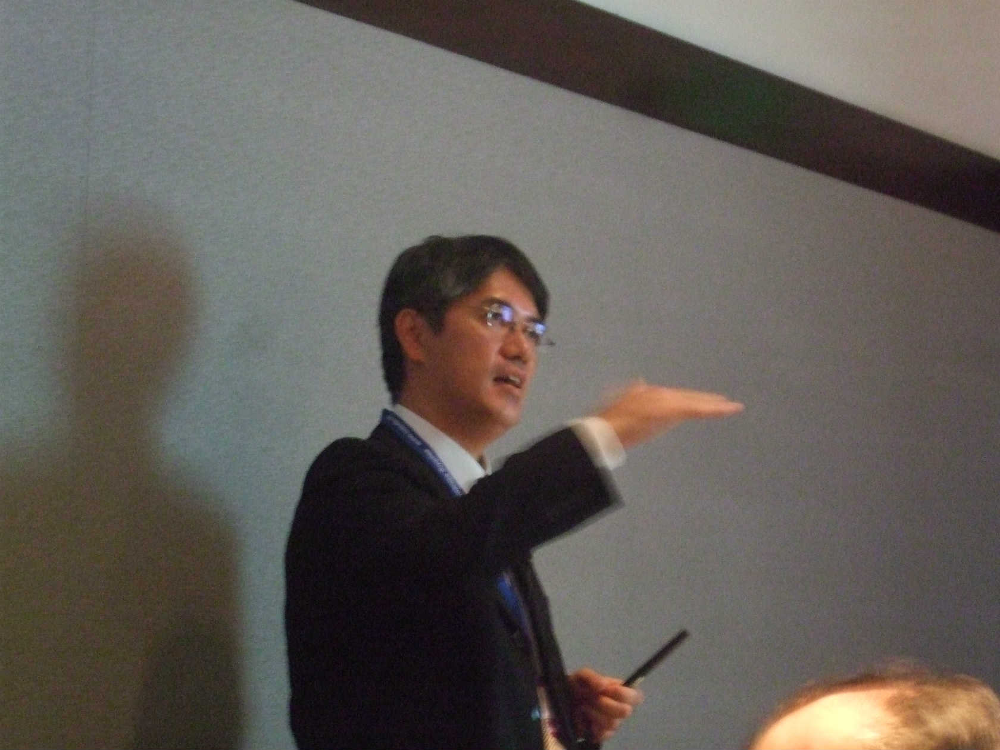

Materials Research Society Fall Meeting (MRS)

招待講演をする木村准教授
招待講演をする木村准教授
木村昭夫 准教授
招待講演
「Manipulating the Dirac Fermions of the 3D Topological Insulators Studied by STM and Synchrotron Radiation ARPES」
「Manipulating the Dirac Fermions of the 3D Topological Insulators Studied by STM and Synchrotron Radiation ARPES」
叶茂
口頭発表
「Engineering of the Interfacial Topological States in the Guest-Atom-Intercalated 3D Topological Insulator」
「Engineering of the Interfacial Topological States in the Guest-Atom-Intercalated 3D Topological Insulator」
黒田健太
口頭発表
「Direct Evidence of Three-Dimensional Topological Insulator Phase in Pb Based Ternary Chalcogenide」
「Direct Evidence of Three-Dimensional Topological Insulator Phase in Pb Based Ternary Chalcogenide」